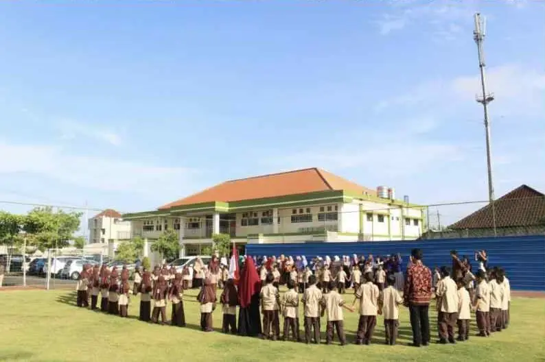
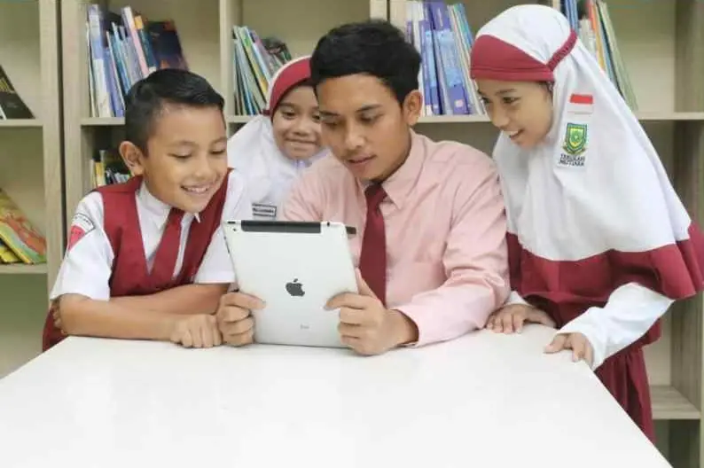
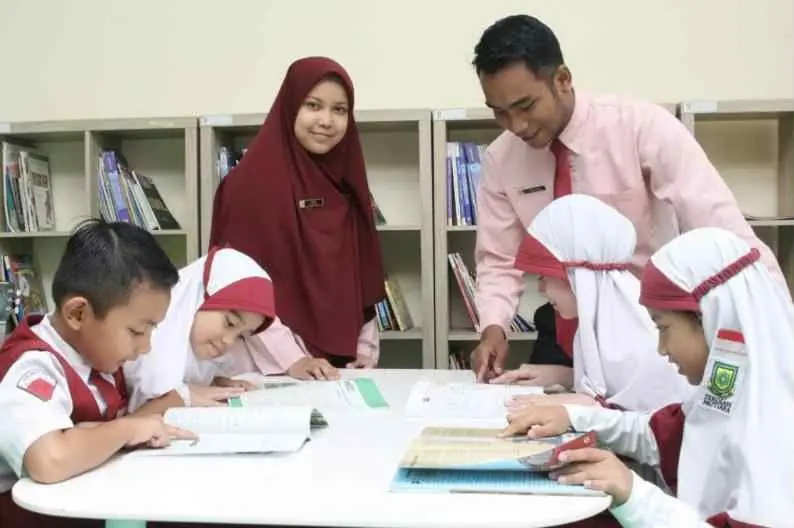
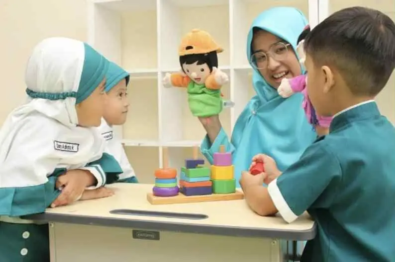
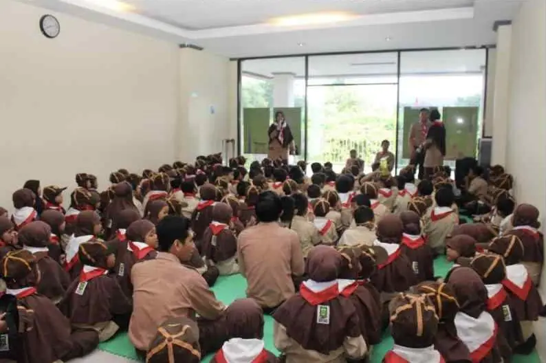
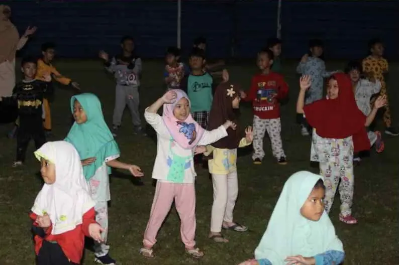

Gallery
Moments from our classrooms, library, field and school events.

















See our latest activities on Instagram and YouTube. The links are on the Contact page.
Ready to join Mutiara School?
Message our team on WhatsApp for enrolment details, fees and school visits.
Enrol via WhatsApp